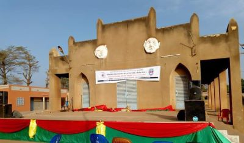
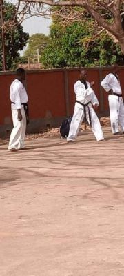

Maison des jeunes


La maison des jeunes de Banfora est un lieu exceptionnel qui offre aux jeunes la possibilité de pratiquer différentes activités sportives dans un environnement dynamique et sécurisé. Avec son large éventail de sports disponibles, elle offre aux jeunes la chance de découvrir de nouvelles passions et de développer leurs talents athlétiques.
Que ce soit le football, le basket-ball, l'athlétisme, le Taekwondo, la boxe ou d'autres sports populaires, la maison des jeunes de Banfora à des entraîneurs expérimentés pour guider les jeunes athlètes dans leur parcours sportif.
Elle abrite en son sein une bibliothèque communale qui est à la porté de tous.